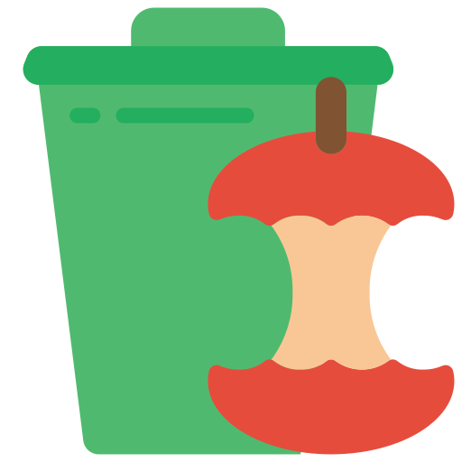
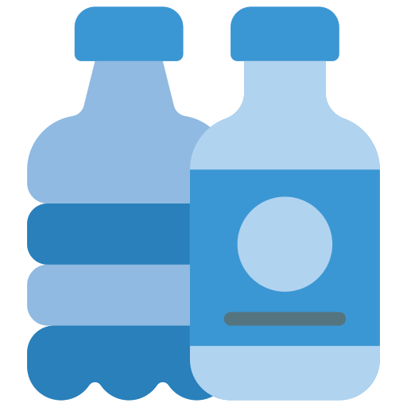
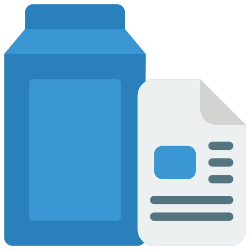
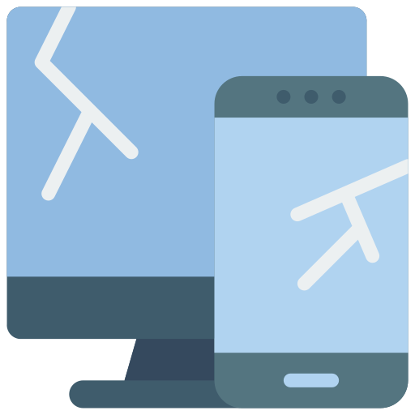
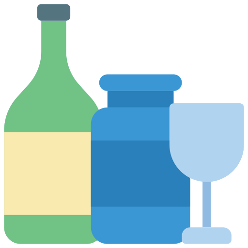
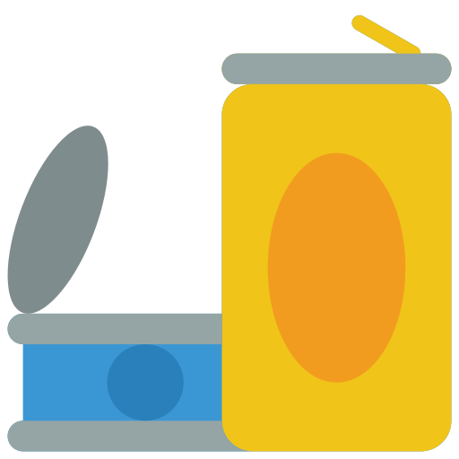

Encontre Seu Ponto de Reciclagem Mais Próximo
Comprometidos com a sustentabilidade e a preservação do meio ambiente, oferecemos a você uma plataforma fácil de usar para localizar pontos de reciclagem perto de você. Descarte corretamente lixo orgânico e inorgânico e contribua para um mundo mais limpo e verde. Junte-se a nós na missão de transformar resíduos em recursos e promover um futuro sustentável para todos.
Lixo Orgânico
Descrição: Resíduos de origem biológica, como restos de comida, cascas de frutas e legumes.
Como Descartar: Compostagem doméstica, coleta municipal de resíduos orgânicos.
Plástico
Descrição: Embalagens plásticas, garrafas, sacolas.
Como Descartar: Separar e encaminhar para reciclagem.
Papel e Papelão
Descrição: Jornais, revistas, caixas de papelão.
Como Descartar: Reciclar em containers específicos para papel ou separar e encaminhar para a reciclagem.
Eletrônico
Descrição: Celulares, computadores, baterias.
Como Descartar: Encaminhar para pontos de coleta de lixo eletrônico.
Vidro
Descrição: Garrafas, potes, vidros quebrados.
Como Descartar: Separar e encaminhar para reciclagem, evitando misturar com outros materiais.
Metal
Descrição: Latas de aço, latas de alumínio, arames.
Como Descartar: Reciclar em containers específicos para metal ou separar e encaminhar para a reciclagem.
Faça Parte da Mudança!
Se você opera ou gerencia um ponto de coleta de recicláveis, junte-se à nossa rede e aumente sua visibilidade.
Ao cadastrar seu ponto de coleta conosco, você não apenas aumenta o engajamento do seu negócio, mas também contribui significativamente para o meio ambiente. Nosso objetivo é facilitar o encontro entre quem deseja reciclar e os locais disponíveis, promovendo uma sociedade mais consciente e responsável. Cadastre seu ponto de coleta hoje e seja um parceiro na construção de um futuro mais verde!
Cadastre ponto de reciclagem
Olá! Meu nome é Gabrielle, sou estudante de Engenharia da Computação na Universidade Tecnológica Federal do Paraná em Cornélio Procópio. Esta website foi criada para a disciplina de Desenvolvimento Web Front-End, com o objetivo de desenvolver um sistema web que atenda uma ou mais ODS. A ReciclaCornélio foi criada com o intuito de ajudar na divulgação e adoção de medidas sustentáveis referente ao descarte de lixo orgânico e inorgânico, buscando resolver problemas como a falta de informação sobre como lidar com o descarte correto do lixo domiciliar, apresentado os pontos de reciclagem e o funcionamento da coleta de lixo na cidade de Cornélio Procópio.
ODS atendidas pela ReciclaCornélio


Para saber mais sobre os Objetivos de Desenvolvimento Sustentável (ODS), clique aqui.